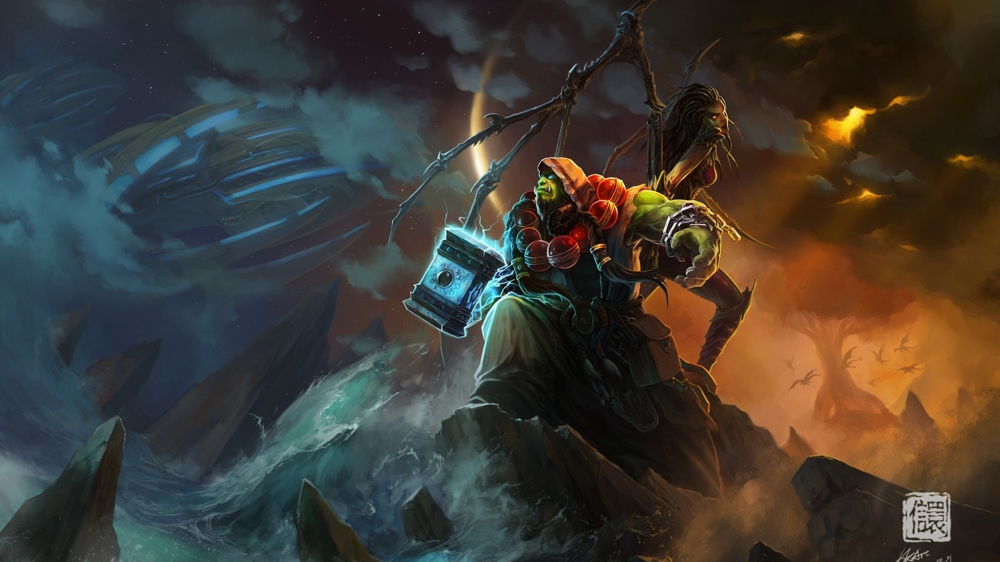

Thrall
Thrall is the son of Durotan, former chieftain of the Frostwolf clan, and Draka. As a baby, he was found amongst the bloody bodies of his murdered parents by Aedelas Blackmoore, commander of the internment camps which held orcs after the end of the Second War. Blackmoore gave him the name Thrall, which was another word for "slave" in the human tongue. Blackmoore returned with Thrall to his fortress, Durnholde Keep, raising him as a gladiator with all the savagery of an orc, but with the keen strategic intellect of a human. He was trained and taught by many, wet-nursed by a human woman, and grew to befriend her daughter, Taretha Foxton. Thrall proved to be an excellent student and a phenomenal fighter.
He was clever, quick, and enormous even by orc standards. However, Blackmoore's abusive beatings both in and out of the ring began to take its toll. Taretha wrote Thrall letters and secretly delivered them to him in his cage within books, and he wrote back to her. Eventually, he wrote to Taretha that he wished to escape. Taretha created a diversion inside Durnholde Keep which allowed Thrall to escape from his cell unnoticed. They met outside the fortress by a cave, where Taretha gave him provisions and supplies. He then left Durnholde, hoping to never return.
Thrall was later captured and taken to an internment camp run by Lorin Remka. It was here that he met an old orc with glowing red eyes named Kelgar. Kelgar told him of the corruption of Gul'dan, and how the old ways had been so much better for the Horde. He told Thrall that the only one still thinking of embracing this was the undefeated Grom Hellscream, Chieftain of the Warsong clan. When another prisoner told Thrall that Blackmoore had arrived at the camp looking for him, Thrall escaped again and searched for Grom Hellscream.After finding Grom Hellscream and proving himself, Thrall was taken under Hellscream's wing and taught the Orcish tongue. Grom revealed to him that Thrall was part of the exiled Frostwolf clan, as evidenced by the tattered swaddling cloth Thrall showed him. After spending some time with Hellscream, Thrall decided to depart and search out his roots in the Alterac Mountains. After trekking to exhaustion, Thrall was rescued by the Frostwolves and taken to their camp. There he met Drek'Thar, who told Thrall that he was the son of the chieftain of the Frostwolves. After finding his place among the Frostwolves, Thrall was taught the old ways of the Horde by Drek'Thar, as it was before Gul'dan's corruption. Soon Thrall was accepted as a member of the clan. A frost wolf named Snowsong eventually chose Thrall as her companion. It was some time after that choosing that he was called away by Drek'Thar, and came upon a quiet place where he had never been or seen before. Here he was to be initiated.